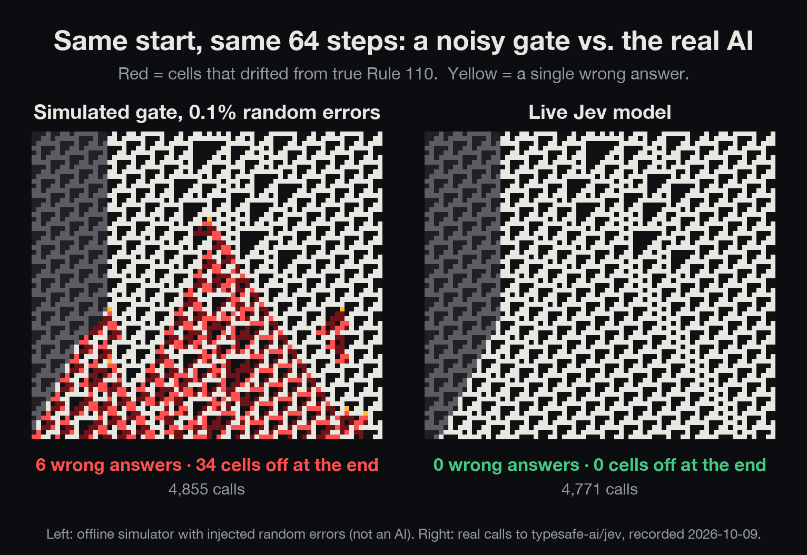
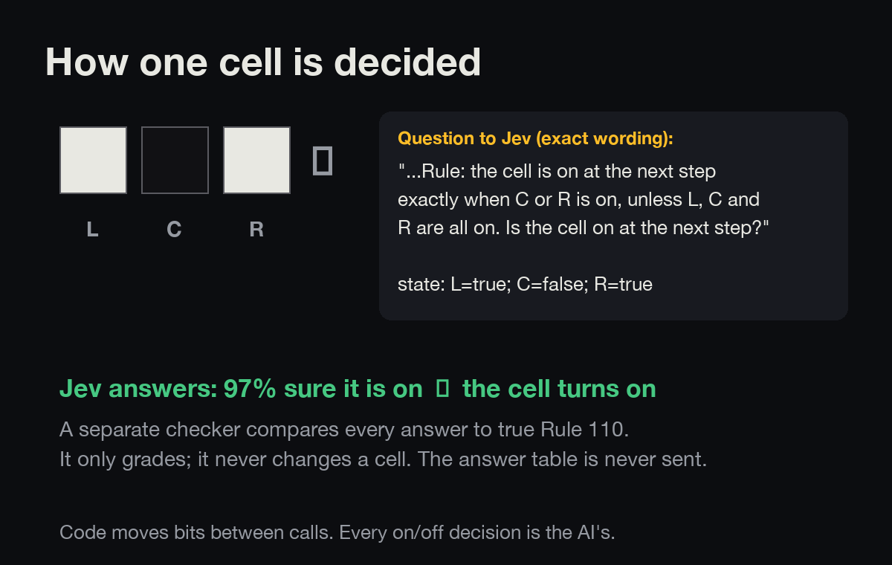
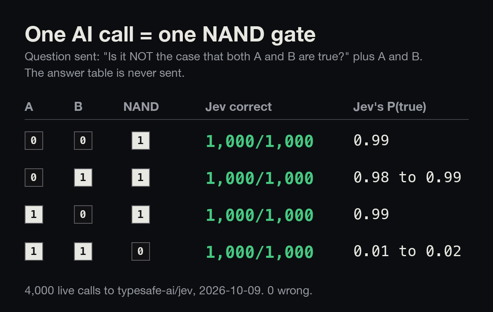
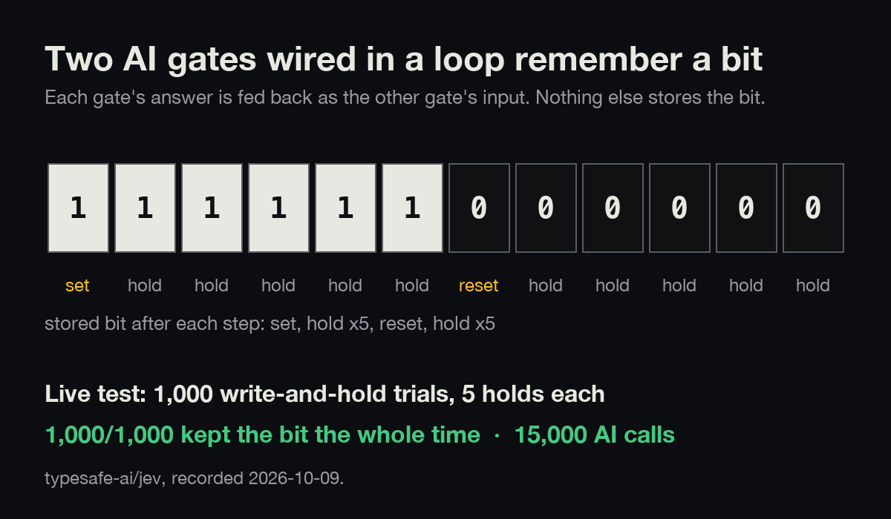
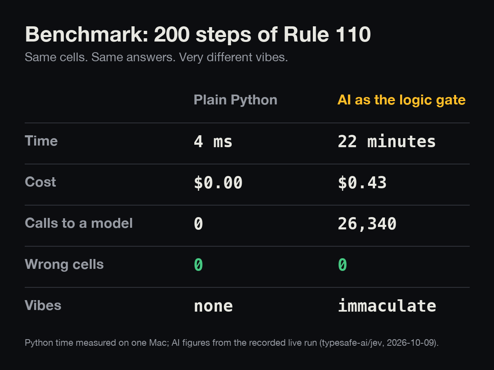

You saw the ad. Here's the fine print, at a size you can read.
I wired an AI model up as a logic gate and ran a tiny computer on it.
Every claim in the ad is real, and every caveat is below. Independent experiment; I have no affiliation with
TypeSafe AI (makers of Jev), Vercel, or OpenAI, and I paid for every call.
The ad
The fine print
Zero mistakes. live calls, each checked by a separate program, wrong.
That rules out an error rate above about 1 in ; it doesn't prove it's zero.
Replay every call.
Plain code is far better at this. The same 200 steps take Python about milliseconds, free.
The AI version took minutes and cost $. The point is whether AI decisions can be chained thousands deep without one slipping, not speed.
Easiest possible questions. Three on/off inputs, one yes/no answer. Real-world judgments are messier.
Wording matters. Asking "under Wolfram's rule 110, is the cell on?" by name failed (one case wrong every time). The results hold only for the wording quoted below.
Zero errors is a bound, not a measurement. See footnote 1.
Not a "universal computer". Rule 110 is universal only with unlimited space; 200 steps on 224 cells is a demonstration.
1 Every decision, replayed
Each pixel is one cell; each row is one tick of the computer. Every bright pixel after the first row was decided by one live call to the model.
Loading recorded run…
on off
repeating background (one call per pattern cell)
differs from the correct answer
wrong answer
Click any cell to see exactly what was sent and what came back.
23 Speed and confidence
From the same calls. The model gives a probability, not just yes or no; the answer is "yes" when it's 50% or more.
How sure the model was on every call. Nothing landed anywhere near the 50% line.Time per call. Calls ran 6 at a time, so the run took about minutes.
4 Why zero matters: mistakes spread
In a computer like this, one wrong cell changes its neighbours on the next tick, and the damage grows.
Left: a simulated gate that's wrong 0.1% of the time (not an AI). Right: the live run. Same start, 64 ticks.
You can also replay the simulated run above with the "Simulated gate" button.

The smaller pieces (not in the ad)

One cell = one question. The answer table is never sent.

One call = one NAND gate (the building block of all logic): 4,000 of 4,000 right.

Two AI gates in a loop remember a bit: 1,000 of 1,000 trials held.

The honest comparison.
All live tests together: about 51,500 graded calls, 0 wrong, about 79¢.
The exact question sent
Each call sends the three cells (for example L=true; C=false; R=true) and this question.
The answer table is never sent; the model works it out from the sentence each time.